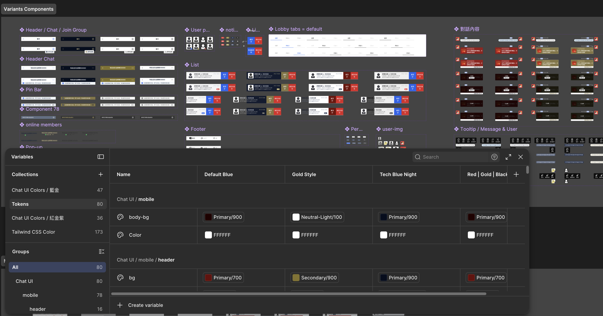
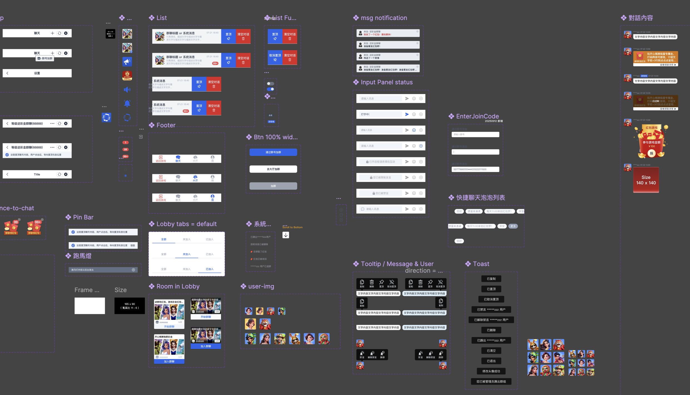
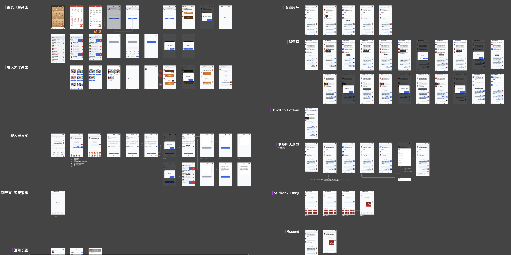
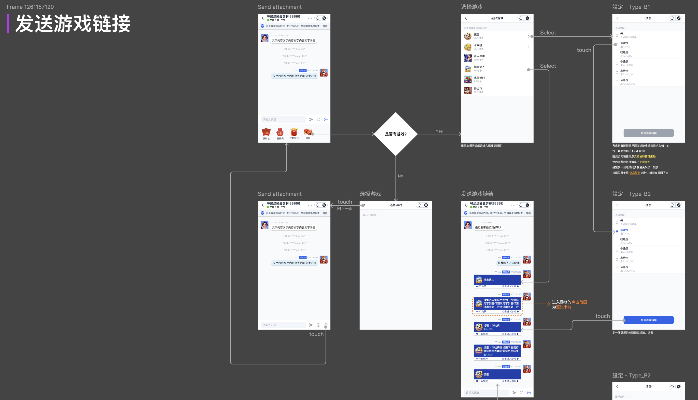
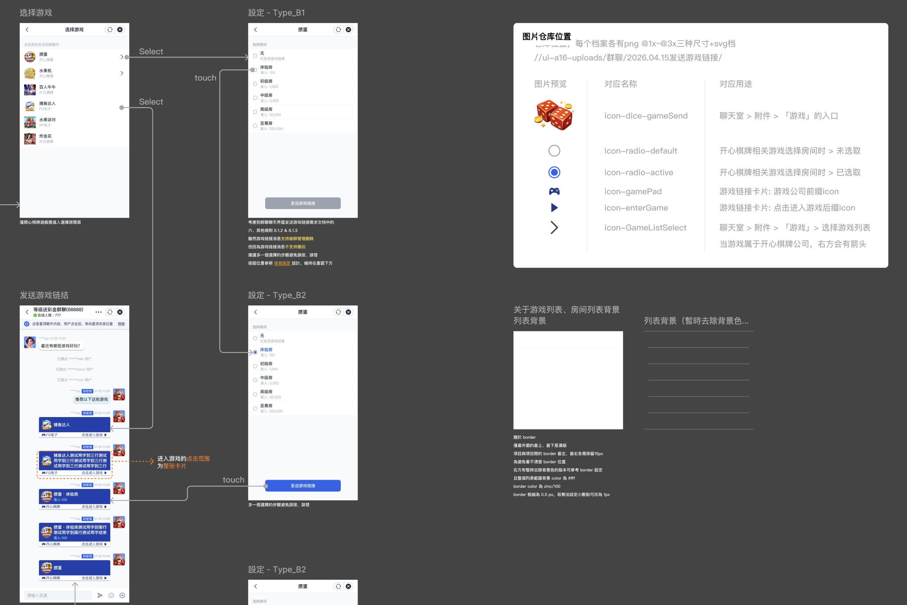
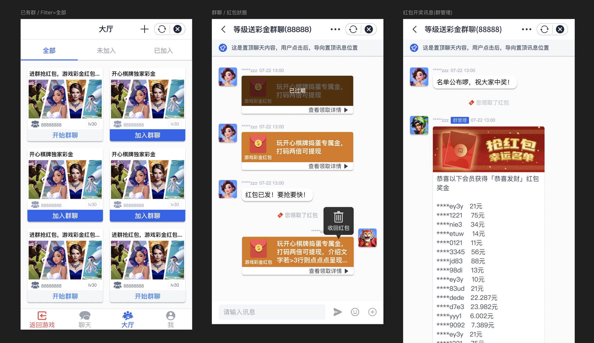

這為了滿足業主在不同平台（各站點）手機版遊戲頁嵌入群聊的需求，設計初期規劃了 4 套不同視覺風格與主題（Theme） 供客戶選型。同時導入 Design Tokens 管理機制（包含 Default Blue、Gold Style、Tech Blue Night 等），簡化視覺變數，讓團隊能快速調整組件樣式，大幅提升後續擴充、維護與跨站點客製化的效率。

確定視覺風格後，進一步建構高度模組化的 UI Component System，重點包含

進入核心設計階段後，我擔任專案主要架構師，負責整體框架建構與流程梳理，同仁則專注於營運組件（紅包、福袋、小遊戲）與個人頁面。我所主導的模組包括：

為確保團隊內部溝通順暢並降低開發溝通成本，針對邏輯較為複雜的情境（如「發送遊戲引流連結」流程），我繪製了嚴謹的 UI Task Flow 與邏輯判斷圖：


專案目前已順利上線。我們深入分析了國內外多款競品，並與團隊及發案方進行多次跨領域討論與反饋校正。
有別於傳統博弈產品常見的高飽和、繁複強烈視覺，最終我們突破既定印象，定案以簡潔清爽、現代化（Clean & Minimalist）的配色風格呈現。這樣的設計既維持了社交介面的易讀性與舒適度，又能讓紅包、福袋等高亮度的營運組件更加跳脫突出。這次跨領域的經驗不僅拓展了我的設計邊界，也成功為產品打造出兼具質感與商業價值的全新體驗。
